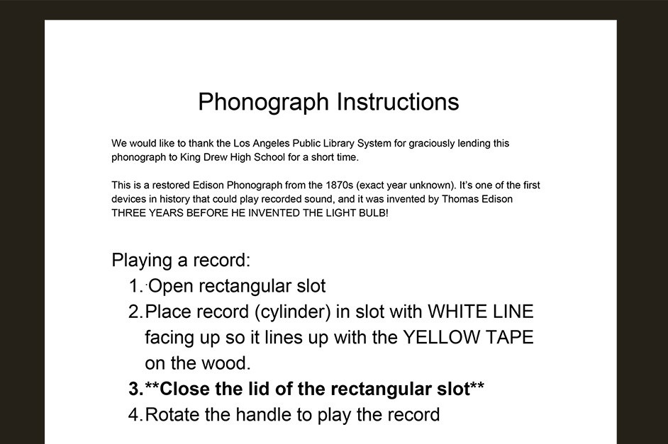

Tracking Ida
Playthrough (Rough Cut)
This is an accelerated playthrough. If you want to follow the narrative, pause the video when I zoom into artifacts and notes. Scroll down for additional materials and photos of the close-ups from the video.
Tracking Ida Explanation Video
Here's a rough cut video explaining the game, it's historical inspiration and goals, and the impact it had on the students who played the pilot.Additional Materials and Close-Ups
Here are some additional materials that didn't make it into the video, plus the close-ups that were briefly shown.
Part 1: Puzzle Solving
Compartment 1
{kind=link}
Instructions for Headlines Puzzle

{kind=link}
{kind=link}
{kind=link}
Compartment 2
Lynching Postcards

Phonograph Note from Trunk
Phonograph Note from Library
{kind=link}
Compartment 3
Ida's Investigative Tactics

Part 2: Newsteam Roleplay
After part 1, players talk with Jordan through email and chat to prepare for their next mission. Below are some samples of that communication.
{kind=link}
Interviewee Bio

Producer Role

{kind=link}
Reporter Role

Videographer Role

{kind=link}
{kind=link}